Araling Panlipunan| 2nd quarter
Josephine Grace P. Labador | 9-FIDELITY
Lesson 1: Demand
Ang demand ay tumutukoy sa dami ng produkto o serbisyo na nais at kayang bilhin ng mga mamimili sa iba’t ibang presyo sa loob ng isang takdang panahon. Ang konseptong ito ay nagpapakita kung gaano kalaki ang kagustuhan ng mamimili na bumili ng isang produkto batay sa presyo nito at sa kanyang kakayahang magbayad. Ang demand ay isang mahalagang bahagi ng ekonomiya sapagkat dito nakabatay ang desisyon ng mga prodyuser kung gaano karaming produkto ang kanilang gagawin at ipagbibili sa merkado.
Mayroon itong inverse relationship sa presyo: kapag mababa ang presyo, tumataas ang demand; samantalang kapag mataas ang presyo, bumababa ang demand. Ibig sabihin, karaniwang mas maraming mamimili ang bibili ng produkto kapag mas mura ito. Ito ang tinatawag na Batas ng Demand (Law of Demand) — na nagsasaad na habang tumataas ang presyo ng isang produkto, bumababa ang dami ng demand dito, ceteris paribus o “kapag ang ibang salik ay hindi nagbabago.”
Ang ceteris paribus ay isang mahalagang konsepto sa ekonomiks na nangangahulugang “all other things being equal.” Ibig sabihin, kapag sinusuri ang epekto ng pagbabago sa presyo ng isang produkto sa demand nito, ipinapalagay na ang lahat ng ibang salik tulad ng kita, panlasa, at presyo ng ibang produkto ay nananatiling pareho.
Tatlong Paraan ng Pagpapakita ng Demand
May tatlong paraan upang ipakita ang ugnayan ng presyo at dami ng demand: Demand Schedule, Demand Curve, at Demand Function.
- 1. Demand Schedule – isang talaan na nagpapakita ng dami ng produktong handang bilhin ng mga mamimili sa iba’t ibang antas ng presyo. Halimbawa, kung ang kendi ay nagkakahalaga ng ₱10, maaaring 100 piraso ang mabili; ngunit kung tataas ito sa ₱20, baka 50 piraso na lamang ang bilhin.
- 2. Demand Curve – isang grapikong representasyon ng ugnayan ng presyo at dami ng demand. Karaniwan itong pababa mula kaliwa-pataas sa kanan (downward sloping curve) upang ipakita ang kabaligtarang relasyon ng presyo at demand.
- 3. Demand Function – isang matematikal na pormula na naglalarawan ng relasyon ng presyo at dami ng demand. Halimbawa, Qd = 60 - 10P kung saan ang Qd ay quantity demanded at ang P ay presyo. Kapag tumaas ang presyo (P), nababawasan ang dami ng demand (Qd).
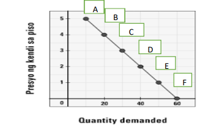
Larawan 1: Halimbawa ng Demand Curve na nagpapakita ng kabaligtarang relasyon ng presyo at demand.
Mga Salik na Nakaaapekto sa Demand (Di-Presyong Salik)
Hindi lamang presyo ang nakaaapekto sa demand. May iba pang salik na maaaring magpataas o magpababa ng dami ng produktong gusto ng mamimili kahit hindi nagbabago ang presyo nito. Ito ay tinatawag na mga di-presyong salik o non-price factors:
- 1. Kita (Income) – Habang tumataas ang kita ng isang tao, tumataas din ang kanyang kakayahan na bumili ng mga produkto. Kapag bumaba naman ang kita, nababawasan ang demand. Halimbawa, kapag tumaas ang sahod, mas madalas kang kakain sa labas o bibili ng branded na damit.
- 2. Panlasa o Kagustuhan (Taste and Preference) – Kapag uso o popular ang isang produkto, tumataas ang demand nito. Ngunit kapag nawala sa uso, bumababa ang demand. Halimbawa, ang mga bagong modelo ng cellphone ay madalas mabili sa umpisa dahil sa mataas na interes ng publiko.
- 3. Dami ng Mamimili (Number of Buyers) – Kapag mas maraming mamimili sa pamilihan, mas mataas ang kabuuang demand. Halimbawa, sa panahon ng enrollment, tumataas ang demand sa school supplies. Kabilang dito ang bandwagon effect — kapag ang mga tao ay bumibili dahil sumasabay lamang sila sa uso o sa karamihan.
- 4. Presyo ng Magkaugnay na Produkto (Prices of Related Goods) – May dalawang uri:
- Complementary goods – mga produktong sabay ginagamit, tulad ng kape at asukal. Kapag tumaas ang presyo ng isa, bumababa ang demand sa isa pa.
- Substitute goods – mga produktong pamalit sa isa’t isa, tulad ng kape at tsokolate. Kapag tumaas ang presyo ng kape, maaaring tumaas ang demand sa tsokolate bilang pamalit.
- 5. Inaasahan ng Mamimili sa Presyo sa Hinaharap (Consumer Expectations) – Kapag inaasahan ng mga mamimili na tataas ang presyo ng isang produkto sa hinaharap, kadalasan ay bibili na sila ngayon. Halimbawa, bago dumating ang bagyo, tumataas ang demand sa mga de-lata, kandila, at tubig dahil sa inaasahang pagtaas ng presyo o kakulangan ng suplay.
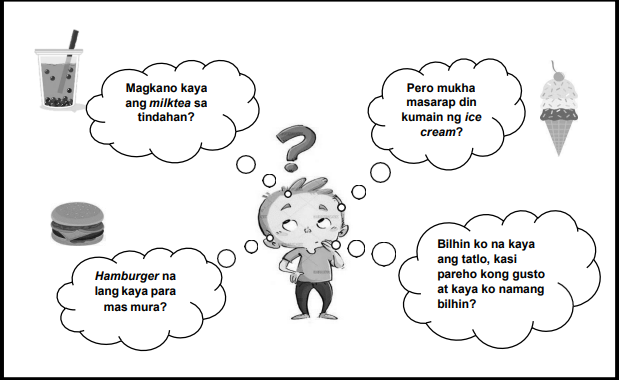
Larawan 2: Halimbawa ng mga desisyong kinakaharap ng mamimili batay sa presyo, panlasa, at kakayahang bumili.
Pangunahing Kaisipan
Ang konsepto ng demand ay isa sa mga pinakapundamental na bahagi ng ekonomiya. Ang pagkilala sa mga salik na nakaaapekto rito ay tumutulong upang maunawaan kung bakit nagbabago ang presyo at dami ng produktong nasa merkado. Bilang mamimili, mahalagang maintindihan ang ugnayan ng presyo at demand upang makagawa ng matalinong desisyon sa paggastos at pag-iimpok. Ang demand ay hindi lamang basta dami ng produkto, kundi salamin din ng ating mga kagustuhan, pangangailangan, at kakayahan bilang kalahok sa ekonomiya.
Lesson 2: Supply
Ang supply ay tumutukoy sa dami ng produkto o serbisyo na handang ipagbili at kayang ipagbili ng mga prodyuser sa iba’t ibang presyo sa loob ng isang takdang panahon. Ipinapakita nito ang ugnayan ng presyo at ng dami ng produkto na gustong ipagbili sa pamilihan. Ang supply ay kabaligtaran ng demand: habang ang demand ay nakabatay sa kagustuhan at kakayahan ng mamimili, ang supply naman ay nakabatay sa kagustuhan at kakayahan ng prodyuser na magbenta.
Ang ugnayan ng presyo at dami ng supply ay direkta o positibo: kapag tumataas ang presyo ng produkto, tumataas din ang dami ng supply na handang ipagbili ng mga prodyuser. Samantalang kapag bumababa ang presyo, bumababa rin ang dami ng supply. Ito ang tinatawag na Batas ng Supply (Law of Supply).
Ang Batas ng Supply ay nagsasaad na “habang tumataas ang presyo ng isang produkto, dumarami ang dami ng produkto na handang ipagbili ng prodyuser, ceteris paribus.” Ibig sabihin, ang iba pang salik tulad ng teknolohiya, buwis, at gastusin ay nananatiling pareho.
Tatlong Paraan ng Pagpapakita ng Supply
- 1. Supply Schedule – isang talaan na nagpapakita ng dami ng produkto na kayang ipagbili ng mga prodyuser sa iba’t ibang antas ng presyo. Halimbawa:
| Presyo (₱) | Dami ng Face Mask na Ipagbibili |
|---|---|
| 100 | 10 piraso |
| 200 | 20 piraso |
| 300 | 30 piraso |
| 400 | 40 piraso |
| 500 | 50 piraso |
Makikita sa halimbawa na habang tumataas ang presyo, mas marami ring produkto ang handang ipagbili ng mga prodyuser.
- 2. Supply Curve – isang grapikong representasyon ng ugnayan ng presyo at quantity supplied. Karaniwan itong pataas mula kaliwa-pakanan (upward sloping) upang ipakita ang direktang relasyon ng presyo at supply.
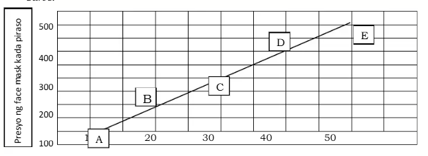
Larawan 1: Supply Curve – habang tumataas ang presyo, tumataas din ang dami ng produktong ipagbibili.
- 3. Supply Function – isang matematikal na pormula na naglalarawan ng relasyon ng presyo at dami ng supply. Halimbawa:
Qs = c + bP
Kung saan:
- Qs – quantity supplied
- c – intercept (ang dami ng produkto kapag ang presyo ay 0)
- b – slope o pagbabago ng supply sa bawat pagtaas ng presyo
- P – presyo
Halimbawa sa Face Mask:
Qs = 0 + 10P
Kapag P = 1,
Qs = 0 + 10(1) → Qs = 10
Ibig sabihin, kung ₱1 ang presyo, 10 piraso ang kayang ipagbili. Kung tataas ang presyo sa ₱5,
Qs = 0 + 10(5) → Qs = 50
Makikita rito ang direktang ugnayan ng presyo at dami ng supply — kapag tumataas ang presyo, mas maraming produkto ang ipinagbibili.
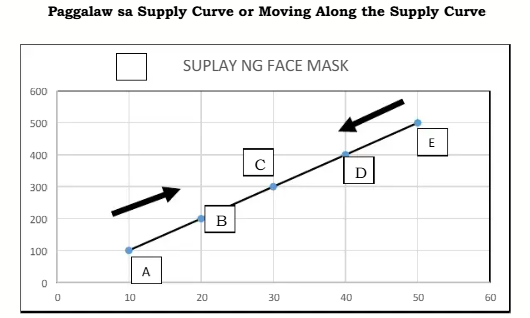
Larawan 2: Paggalaw sa Supply Curve o Moving Along the Curve – ipinapakita ang pagtaas ng supply habang tumataas ang presyo.
Paggalaw at Paglipat sa Supply Curve
Paggalaw sa Supply Curve ay nagaganap kapag nagbago ang presyo ng produkto. Halimbawa, tumaas ang presyo ng face mask kaya dumami ang ipagbibili ng mga prodyuser. Kapag bumaba ang presyo, bababa rin ang dami ng produkto.
Paglipat ng Supply Curve ay dulot ng pagbabago ng mga di-presyong salik gaya ng teknolohiya, buwis, o panahon. Kapag bumuti ang teknolohiya, lilipat ang supply curve pakanan (pagtaas ng supply). Kapag tumaas ang buwis o gastos sa produksiyon, lilipat ito pakaliwa (pagbaba ng supply).
Mga Salik na Nakaaapekto sa Supply
- 1. Presyo ng Input o Gastos sa Produksyon – Kapag tumaas ang presyo ng hilaw na materyales, suweldo, o kagamitan, bumababa ang supply. Kapag bumaba ang gastos, tumataas ang supply.
- 2. Teknolohiya – Ang paggamit ng makabagong teknolohiya ay nagpapabilis ng produksiyon at nagpapataas ng supply.
- 3. Dami ng Prodyuser – Mas maraming negosyong lumalahok, mas mataas ang kabuuang supply.
- 4. Buwis at Subsidy – Ang buwis ay dagdag gastos kaya bumababa ang supply; ang subsidy ay kabaligtaran dahil tumutulong ito upang mapataas ang supply.
- 5. Inaasahan ng Prodyuser – Kapag inaasahang tataas ang presyo, maaaring ipagpaliban ng prodyuser ang pagbebenta upang kumita nang mas malaki sa hinaharap.
- 6. Panahon o Klima – Ang mga produktong agrikultural ay lubhang apektado ng panahon. Kapag tagtuyot o bagyo, bumababa ang supply ng mga ani.
Pangunahing Kaisipan
Ang supply ay mahalagang bahagi ng pamilihan. Ipinapakita nito kung paano tumutugon ang mga prodyuser sa pagbabago ng presyo at ng mga salik ng produksiyon. Sa pag-unawa sa supply, natututuhan nating suriin kung paano bumabalanse ang dami ng produktong ginagawa sa pangangailangan ng mamimili. Ang supply at demand ang bumubuo sa ekwilibriyong presyo na nagtatakda ng katatagan sa ekonomiya.
Lesson 3: Price Elasticity ng Demand at Supply
Ano ang Elasticity? — Ang elasticity ay sukatan ng tugon o responsiveness ng dami (quantity) kapag nagbago ang presyo. Ginagamit ito upang makita kung gaano kalaki ang epekto ng pagbabago sa presyo sa dami na bibilhin o ipagbibili.
Price Elasticity of Demand
Definition:
Ang price elasticity ng demand ay ang ratio ng porsiyentong pagbabago ng quantity demanded (ΔQd) sa porsiyentong pagbabago ng presyo (ΔP).
Formula
Q1 at Q2 = unang at bagong dami ng demand
P1 at P2 = unang at bagong presyo
Ed = sinusukat kung gaano kalaki ang reaksyon ng demand kapag nagbago ang presyo
Interpretation (absolute value ng Ed):
- |Ed| > 1 → Elastic — malaki ang tugon ng demand sa pagbabago ng presyo
- |Ed| < 1 → Inelastic — maliit lang ang tugon ng demand
- |Ed| = 1 → Unitary Elastic — proporsyonal ang pagbabago ng presyo at dami
- |Ed| = ∞ → Perfectly Elastic — kahit maliit na pagbabago sa presyo ay malaking pagbabago sa demand
- |Ed| = 0 → Perfectly Inelastic — walang pagbabago sa demand kahit magbago ang presyo
Mga Salik na Nakaaapekto sa Elasticity ng Demand:
- Maraming alternatibo / substitutes — kapag maraming mapagpipilian, mas magiging elastic ang demand
- Uri ng produkto: luho vs. pangangailangan — luho ay karaniwang mas elastic
- Bahagi ng kita na ginagastos sa produkto — kung maliit lang ang bahagi ng kita, mas inelastic
- Panahon (time) — sa mas mahabang panahon, mas maraming pagbabago ang maaaring mangyari, kaya nagiging mas elastic
- Pagkakaalam at kaugalian ng mamimili — kapag sanay na sa produkto, maaaring hindi agad bumaba ang demand kahit tumaas ang presyo
Application / Total Revenue Test:
— Kung demand ay **inelastic** (|Ed| < 1), pagtaas ng presyo → **tataas** ang total revenue
— Kung demand ay **elastic** (|Ed| > 1), pagtaas ng presyo → **bababa** ang total revenue
— Kung unitary elastic, pagbabago sa presyo ay hindi gaanong makakaapekto sa total revenue
Price Elasticity of Supply (Es)
Definition:
Ang price elasticity ng supply ay ang porsiyentong pagbabago sa quantity supplied (ΔQs) hinati sa porsiyentong pagbabago ng presyo (ΔP).
Formula
ES = (%ΔQ / %ΔP) = [(Q2 - Q1) / ((Q2 + Q1) / 2)] ÷ [(P2 - P1) / ((P2 + P1) / 2)]
Interpretation:
- Es > 1 → Elastic Supply
- Es < 1 → Inelastic Supply
- Es = 1 → Unitary Elastic Supply
Mga Salik na Nakaaapekto sa Elasticity ng Supply:
- Panahon (time period) — sa maikling panahon, mahirap baguhin ang produksiyon kaya mas inelastic; sa mahabang panahon, mas mahalagang respond
- Availability ng resources / input materials — higit na madali makakuha ng input → mas elastic
- Teknolohiya — mas advanced na teknolohiya → mas mabilis makapag-adjust → mas elastic
- Flexibility ng produksiyon — kung kayang mabilis mag-adjust ng produksyon sa demand changes
- Kalagayan ng industriya o kapasidad — kung karamihan sa produksiyon ay puno na (full capacity), magiging inelastic
Uri ng Elasticity (Demand & Supply) / Degree:
- Perfectly Elastic (horizontal curve) — kahit maliit na pagbabago sa presyo ay malaking pagbabago sa dami
- Relatively (or Highly) Elastic
- Unitary Elastic
- Relatively (or Highly) Inelastic
- Perfectly Inelastic (vertical curve) — ang dami ay hindi nagbabago kahit magbago ang presyo
Mga Halimbawa
Tingnan ang mga larawan sa ibaba para mas maunawaan ang konsepto:
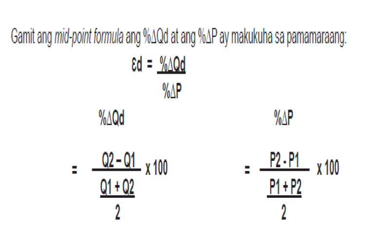
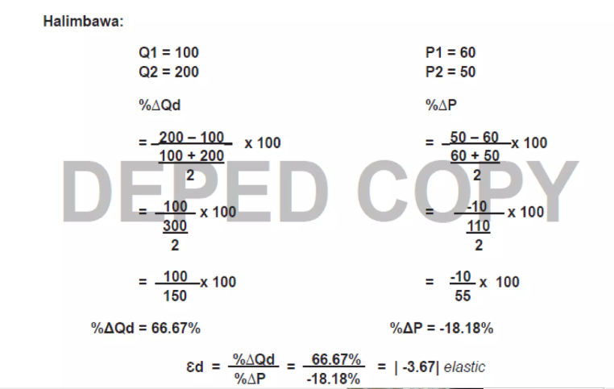
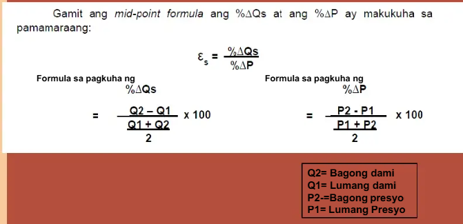

Lesson 4: Interaksyon ng Demand at Suplay
Sa araling ito, tatalakayin natin ang kung paano nagtutugma (o hindi) ang dami ng gusto & kayang bilhin ng mamimili (demand) at ang dami ng gustong & kayáng ipagbili ng prodyuser (supply) sa pamilihan — kasama ang mga konsepto ng ekwilibriyo, kakulangan (shortage) at kalabisan (surplus).
Ano ang Interaksyon ng Demand at Suplay?
Ang “interaksyon ng demand at suplay” ay ang pagkakasalubong ng dalawang puwersang pang-ekonomiya sa pamilihan: ang mga mamimili na gustong bumili, at ang mga prodyuser na gustong magbenta.
Sa isang ideal na kalagayan, makakamit ang estado ng ekwilibriyo kapag ang dami ng demand (Qd) ay pantay sa dami ng supply (Qs) sa isang partikular na presyo (P).
Ekwilibriyo, Shortage at Surplus
- Ekwilibriyo (Equilibrium): Punto kung saan Qd = Qs. Dito ang tinatawag na ekwilibriyong presyo (P*) at ekwilibriyong dami (Q*) — halimbawa: P = ₱3 at Q = 30 piraso.
- Surplus (Kalabisan): Sitwasyon kung saan Qs > Qd — mas marami ang ipagbibili kaysa gusto at kayang bilhin ng mamimili → may natirang produkto sa pamilihan.
- Shortage (Kakulangan): Sitwasyon kung saan Qd > Qs — mas maraming gustong bumili kaysa may ipagbili → may kakulangan sa produkto sa pamilihan.
Bakit Mahalaga ito sa Pamilihan?
Ang interaksyon ng demand at supply ang tumutukoy sa pag-takda ng presyo at dami sa pamilihan. Kapag may surplus o shortage, ang presyong P ay may tendensiyang magbago upang bumalik sa ekwilibriyo.
Halimbawa: Kung mataas ang presyo sa P > P*, Qs mas mataas kaysa Qd → may kalabisan → tumutulak pababa ang presyo. Kung mababa naman ang presyo sa P < P*, Qd mas mataas kaysa Qs → kakulangan → tumutulak pataas ang presyo hanggang bumalik sa ekwilibriyo.
Mga Paraan ng Pag-pakita ng Interaksyon
May tatlong karaniwang paraan upang ipakita ang ugnayan ng demand at supply sa pamilihan:
- Market Schedule / Talahanayan: Nagpapakita ng dami demanded at dami supplied sa iba’t ibang antas ng presyo. (Halimbawa: Market Schedule para sa cookies)
- Market Curve / Grap: Graph kung saan ipinapakita ang kurba ng demand (pababa) at kurba ng supply (pataas) at ang punto ng ekwilibriyo.
- Market Function / Matematika: Pormula tulad ng Qd = a – bP at Qs = c + dP, kung saan puwedeng hanapin ang ekwilibriyong presyo at dami.
Mga Visual Diagram ng Interaksyon
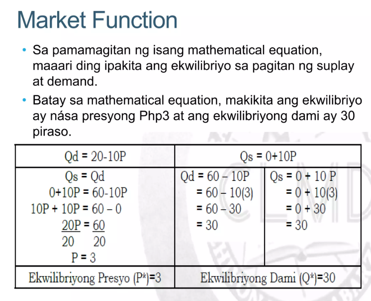

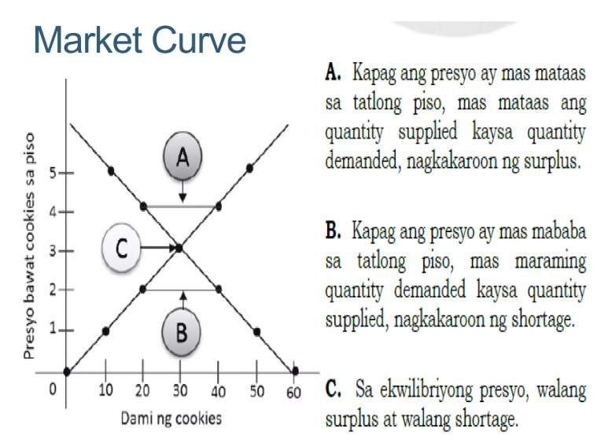
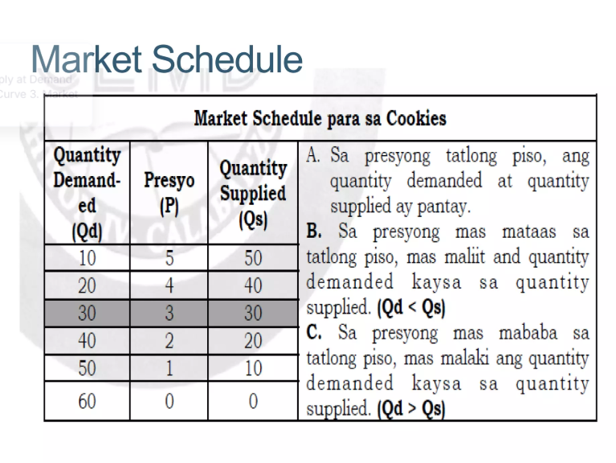
Buod: Table ng Mahahalagang Konsepto
| Konsepto | Kahulugan |
|---|---|
| Ekwilibriyo | Kalagayan sa pamilihan kung saan ang dami ng demand (Qd) ay katumbas ng dami ng supply (Qs) sa isang partikular na presyo. |
| Surplus (Kalabisan) | Q s > Q d → labis ang supply kaysa demand → natitira ang produkto. |
| Shortage (Kakulangan) | Q d > Q s → mas maraming gustong bumili kaysa may ipagbili → kakulangan sa produkto. |
| Market Schedule | Talahanayan na naglalarawan ng Q d at Q s sa iba’t ibang presyo. |
| Market Curve | Grapikong representasyon ng demand at supply; makikita ang slope at punto ng ekwilibriyo. |
| Market Function | Pormulang Qd = a – bP o Qs = c + dP upang kalkulahin ang ekwilibriyong presyo at dami. |
Flashcards para sa Review
Lesson 5: Estruktura ng Pamilihan
Ang pamilihan ay isang lugar kung saan nagtatagpo ang mga mamimili at prodyuser upang ipagpalit ang mga produkto at serbisyo. Dito nabubuo ang presyo batay sa interaksyon ng demand at supply. Ang estruktura ng pamilihan ay tumutukoy sa kalagayan o kondisyon ng pamilihan kung saan nakabatay ang ugnayan ng mga mamimili at nagbebenta.
Apat na Pangunahing Estruktura ng Pamilihan
Perfect Competition (Ganap na Kompetisyon)

Kahulugan: Ang ganap na kompetisyon ay kalagayang may napakaraming nagbebenta at mamimili. Ang mga produkto ay magkakatulad at walang sinumang may kontrol sa presyo.
- Maraming maliliit na prodyuser at mamimili
- Magkakatulad ang produkto (homogenous)
- Malayang paglabas-pasok sa pamilihan
- Presyo ang tanging batayan sa pagpili ng mamimili
Halimbawa: Palengke ng gulay, bigas, o isda sa mga lokal na merkado.
Monopolistic Competition

Kahulugan: Uri ng pamilihan na may maraming kalahok ngunit may produktong may bahagyang pagkakaiba. Ang bawat kompanya ay may kakayahang magtakda ng presyo sa sariling produkto.
- Maraming prodyuser at mamimili
- Magkakaibang produkto (may brand, packaging, o kalidad)
- Malayang paglabas at pagpasok sa pamilihan
- Malakas ang kompetisyon sa advertising
Halimbawa: Mga fast-food chains tulad ng Jollibee, McDonald’s, Chowking.
Oligopoly

Kahulugan: Kalagayang may iilang malalaking kompanya na kumokontrol sa presyo at suplay. Ang mga desisyon ng isa ay maaaring makaapekto sa iba.
- Iilang naglalakihang kompanya
- Mataas ang hadlang sa pagpasok sa industriya
- Nagkakaroon ng sabwatan o price wars
- May pagkakapareho o bahagyang pagkakaiba sa produkto
Halimbawa: Globe, Smart, Petron, Shell.
Monopoly

Kahulugan: Kalagayan kung saan iisang kompanya lamang ang gumagawa o nagbebenta ng isang produkto o serbisyo at walang malapit na kapalit.
- Iisang prodyuser lamang
- Walang kakompetensiya
- Malakas ang kontrol sa presyo
- Mataas na hadlang sa pagpasok
Halimbawa: Meralco (kuryente), MWSS (tubig).
Paghahambing ng Apat na Estruktura
| Katangian | Ganap na Kompetisyon | Monopolistic | Oligopoly | Monopoly |
|---|---|---|---|---|
| Bilang ng prodyuser | Marami | Marami | Iilan | Isa |
| Uri ng produkto | Magkakatulad | Magkakaiba | Magkakatulad o bahagyang magkaiba | Walang kapalit |
| Kontrol sa presyo | Wala | Bahagya | Malaki | Ganap |
| Hadlang sa pagpasok | Wala | Mababa | Mataas | Napakataas |
| Halimbawa | Palengke | Fast-food | Telecom, langis | Kuryente, tubig |
Lesson 6: Ugnayan ng Pamilihan at Pamahalaan
Komprehensibong talakay mula sa module — Price Ceiling, Price Floor, Price Support, Price Freeze, SRP, at papel ng pamahalaan
Panimula
Ang ugnayan ng pamilihan at pamahalaan ay mahalaga sa pagtiyak na ang presyo at suplay ng mga pangunahing bilihin ay makatarungan at abot-kaya. Sa pamamagitan ng mga patakaran tulad ng price ceiling,price floor, price support, price freeze, at SRP (Suggested Retail Price), pinoprotektahan ng pamahalaan ang kapakanan ng mga konsyumer at prodyuser, lalo na sa panahon ng krisis o kapag may market failure.
Price Ceiling
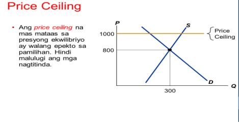
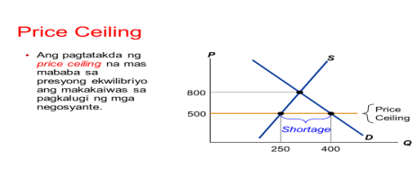
Depinisyon: Ang price ceiling ay kilala rin bilang maximum price policy — ito ang pinakamataas na presyo na maaaring ipagbili ng prodyuser ng isang produkto. Karaniwang ipinatutupad ito sa mga pangunahing pangangailangan tulad ng bigas, asukal, kape, harina, tinapay, itlog, at iba pa. Ang price ceiling ay itinatakda na mas mababa sa equilibrium price para mapanatiling abot-kaya ang bilihin.
Paano at bakit ipinatutupad: Ipinatutupad ng pamahalaan ang price ceiling upang maprotektahan ang mga konsyumer, lalo na sa panahon ng emergency o kalamidad. Ang Department of Trade and Industry (DTI) at lokal na pamahalaan ang karaniwang nagsasagawa ng pagpapatupad at pagmamanman (tsek sa SRP at price freeze kapag kinakailangan).
Mga Epekto ng Price Ceiling
| Mabuti | Di-mabuti |
|---|---|
|
1. Mababang presyo ng mga bilihin. 2. Kasiguruhan para sa mga mamimili. |
1. Pagbaba ng supply (maaaring humina ang produksiyon). 2. Nagiging dahilan ng kakulangan (shortage). 3. Posibleng magtungo sa pagkakaroon ng mga ilegal na pamilihan (black market). |
Tandaan: Sa panahon ng kalamidad, maaaring ipatupad ang price freeze (pagbabawal sa pagtaas ng presyo) at mahigpit na binabantayan ng DTI ang SRP at iba pang regulasyon upang maiwasan ang pananamantala ng negosyante.
Price Floor (Price Support / Minimum Price)
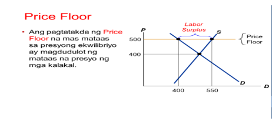
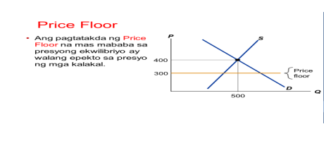
Depinisyon: Ang price floor (o price support / minimum price) ay ang pinakamababang presyo na itinakda ng batas para sa ilang produkto o serbisyo. Ito ay karaniwang itinakda ng pamahalaan upang makatulong sa mga prodyuser (hal., magsasaka) at manggagawa (minimum wage), lalong-lalo na kapag ang equilibrium price ay masyadong mababa at nagbabantang magdulot ng pag-untog sa produksiyon.
Mga Epekto ng Price Floor
| Mabuti | Di-mabuti |
|---|---|
| 1. Mas mataas na sahod para sa manggagawa (hal., minimum wage). 2. Mas malaking tubo para sa ilang prodyuser. |
1. Mas mataas na presyo ng bilihin para sa konsyumer. 2. Maaring magdulot ng kalabisan (surplus) ng kalakal. 3. Maaaring bumaba ang demand dahil sa mas mataas na presyo. |
Halimbawa ng price support ay subsidy sa agrikultura, minimum wage, tax exemptions o iba pang tulong na pinansyal upang panatilihing sustainable ang produksiyon.
Buod at Paghahambing
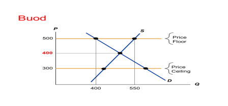
Pagkakatulad ng Price Ceiling at Price Floor: Parehong regulasyon mula sa pamahalaan at layuning itaguyod ang kapakanan ng mga mamamayan — bagaman magkaiba ang focus (ceiling para proteksyon ng konsyumer; floor para proteksyon ng prodyuser/manggagawa).
| Konsepto | Kahulugan | Mabuti | Di-mabuti |
|---|---|---|---|
| Price Ceiling | Pinakamataas na presyo; nakatakda mas mababa sa equilibrium price. | Mababang presyo; kasiguruhan sa konsyumer. | Kakulangan, pagbaba ng supply, black market. |
| Price Floor | Pinakamababang presyo; nakatakda mas mataas sa equilibrium price. | Mas mataas na kita/sahod para sa prodyuser/manggagawa. | Kalabisan ng produkto, mas mataas na presyo para sa konsyumer. |
Papel ng Pamahalaan sa Pamilihan
Ahensiya at mekanismo: Ang Department of Trade and Industry (DTI) ang pangunahing ahensiya na nagpapatupad ng price regulations tulad ng SRP, price ceiling, at price freeze. Nakikipagtulungan ito sa lokal na pamahalaan (barangay, lungsod) para i-monitor ang galaw ng presyo.
Mga instrumento: SRP (Suggested Retail Price), price freeze (pansamantalang pagbabawal sa pagtaas ng presyo sa mga apektadong lugar), price support (subsidy, tax exemptions), at penalties sa mga lalabag (multa at posibleng pagkakakulong ayon sa mga umiiral na batas).
Halimbawa sa modyul: Kapag may sakuna (e.g., bagyo) at itinatakda ng DTI ang 60-day price freeze sa mga nasa state of calamity, hindi maaaring magtaas ng presyo ng mga pangunahing agricultural at non-agricultural necessities. Ang mga lalabag ay maaaring pagmultahin mula Php5,000 hanggang Php1,000,000 at/o pagkakakulong ng isa hanggang sampung taon (ayon sa modyul na pinagmulan).
Layunin ng pamahalaan: (mula sa modyul) — 1) panatilihin ang abot-kayang presyo para sa mamamayan; 2) protektahan ang mga prodyuser kapag ang presyo ng produkto ay napakababa; 3) panagutin ang mga mapanmanipulasyon na negosyante sa panahon ng emergency.